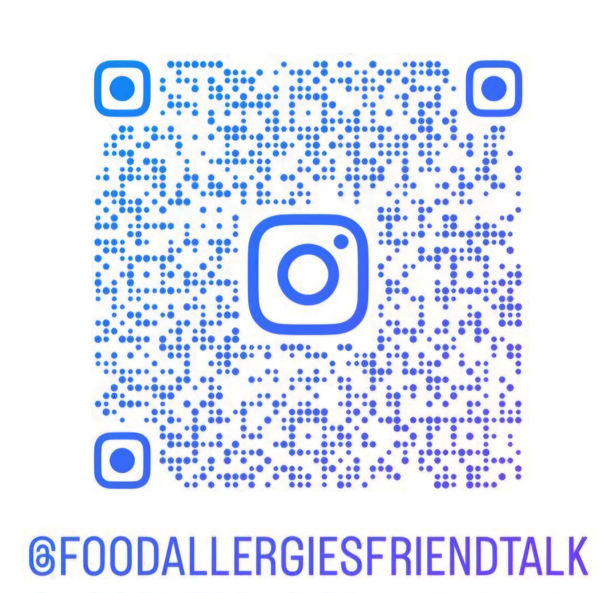

.PNG)
I’m incredibly proud and excited to started this journey my Silver Award project “Food Allergies Friend Talk”. My little sister has food allergies, and I’ve seen firsthand how challenging it can be for her and our family. I noticed that many people in our community aren’t fully aware of the risks and how to manage food allergies, and for the same reason there are not emphatic or inclusive, so I decided to take action. This project is very important for me and my family.
Food allergies can be a big deal. They happen when someone’s body reacts badly to certain foods, like peanuts, milk, or eggs. For some people, this can cause serious health problems, it can be really dangerous. I've seen how important it is to be aware of these issues and know how to handle them.
A food allergies occur when a person a eats, touches or inhales a protein in food called an allergen. The immune system makes a type of antibody against the allergen called IgE. Did you know that about 1 in 13 kids have food allergies and more than 40% of children with food allergies have experienced a severe reaction. The common symptoms of food allergies are tingling or itching in the mouth, hives, eczema, swelling of the lips, face, tongue and throat or other parts of the body, wheezing, nasal congestion or trouble breathing, belly pain, diarrhea, nausea, vomiting, dizziness, lightheadedness or fainting.
I am doing this project because I want everyone to be informed and to be more empathetic with the food allergy families. When people know more about food allergies, it’s easier to make sure everyone stays safe and healthy. It is important for those of us who have friends or family members with allergies to be aware of what we eat around them.
I’d love to keep you updated on my project and share more about food allergy awareness! Follow me on social media for updates, tips, and more:
Instagram:
Feel free to leave a comment. It’s always great to connect with others who share similar interests!Thanks for stopping by my page. I hope you have a fantastic day